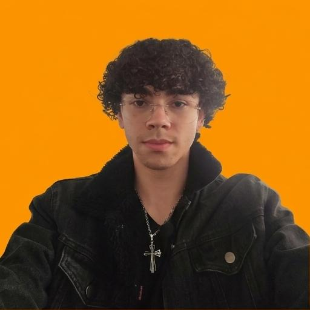
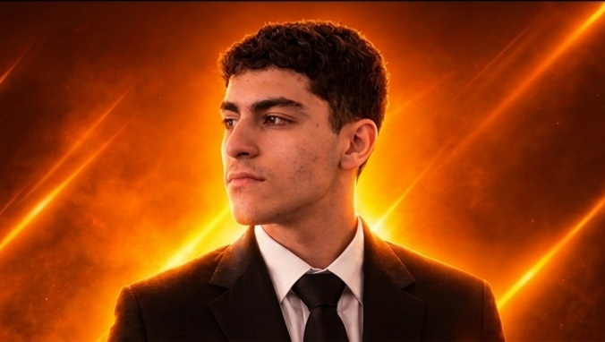
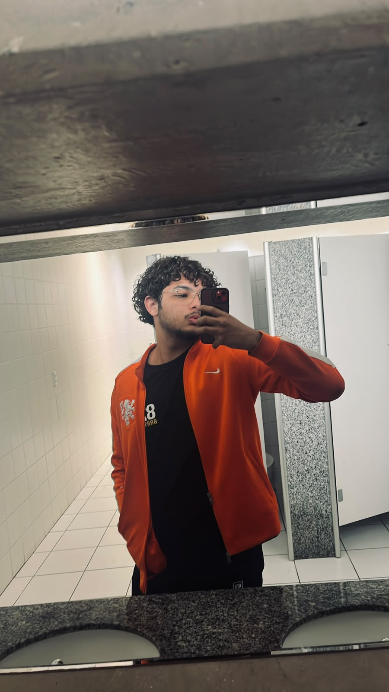

Gerente

Desenvolvedor

Desenvolvedor
Desenvolvedor
O Projeto Cão Feliz foi criado por Henrique Palu, Gustavo Fazani, Yago Felix e Miguel Valentim, a partir da vontade de ajudar cães abandonados e em situação de vulnerabilidade. A ideia surgiu com o objetivo de oferecer cuidados, proteção e uma nova oportunidade para esses animais encontrarem um lar amoroso. O projeto busca incentivar a adoção responsável, além de conscientizar as pessoas sobre a importância de cuidar e respeitar os animais.